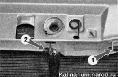
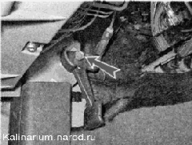
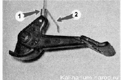

Тяга привода замка капота - замена
Снятие
1. Подготавливаем автомобиль к выполнению работы.
2. Снимаем решетку радиатора.
3. Выводим тягу через прорезь из упора 1 и отсоединяем передний конец тяги от петли пружины замка капота 2.
4. Под панелью приборов торцовым ключом на 13 мм отворачиваем болт крепления рычага открытия замка капота.
5. Отгибаем загнутый конец тяги привода замка 2 и поднимаем стопорное кольцо 1 тяги вверх.
6. Распрямляем тягу привода замка и отсоединяем ее от рычага.
7. Для удобства сборки загибаем конец тяги в петлю и привязываем шнур к тяге.
8. Вынимаем уплотнитель и выводим тягу из перегородки моторного отсека и вытягиваем через усилительный короб кузова.

9. Отсоединив шнур, снимаем тягу в сборе с оболочкой.
Установка
Устанавливаем тягу привода замка капота в обратной последовательности, при этом тягу протягиваем через элементы кузова с помощью шнура.